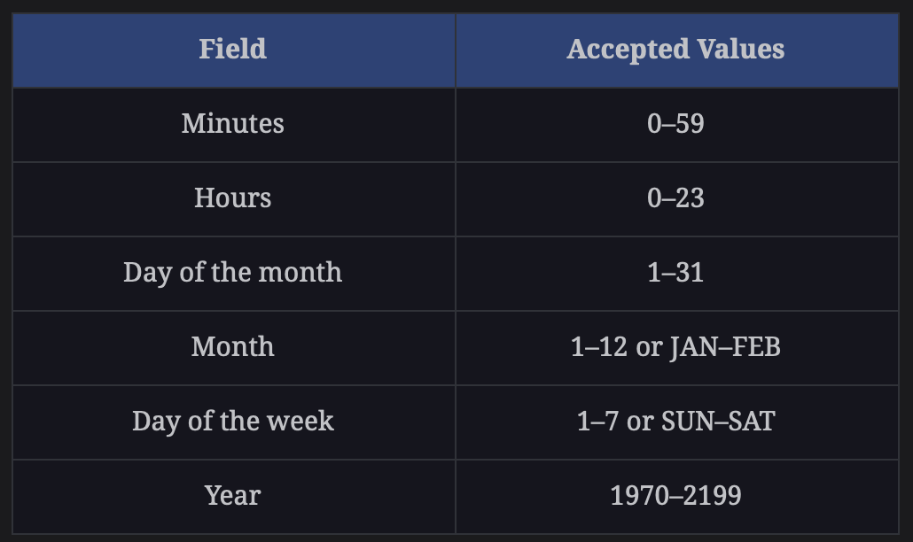

AWS SQS, SNS, and Kafka
Credits Educative.io
Here we demo some message queue and pub/sub platforms: - AWS SQS - AWS SNS - Kafka
We first create a standard SQS, then we send a message to it, and print message ID. Then we create AWS SNS which is great for prototyping and smaller projects. Finally, we demo Kafka which is fast, large scale industry standard.
AWS SQS
We first create a standard SQS, then we send a message to it, and print message ID. Note that a consumer must delete messages in the queue after processing them (this process is not done automatically by SQS). They disappear temporary but reappear after expiration time. Send a message via python:
import json
import boto3
# Create an SQS client
client = boto3.client('sqs',region_name='us-east-1',aws_access_key_id="XYZ",
aws_secret_access_key= "XYZ")
# URL of the queue
queue_url = 'https://sqs.us-east-1.amazonaws.com/XYZ/MyQueue'
# Send message to SQS queue
response = client.send_message(
QueueUrl=queue_url,
MessageAttributes={
'Subject': {
'DataType': 'String',
'StringValue': 'Sample Message'
},
},
MessageBody=(
'This is a sample message'
)
)
print(response['MessageId'])Delete all messages:
delete_response = client.purge_queue(
QueueUrl=queueURL
)SNS
Lambda will be publisher (and will trigger it using EventBridge scheduler), and we’ll have two subscribers, SQS queue and an email. Next IAM role (add SNSPublishManagedPolicy to the IAM role and assign to Lambda).
import json
import boto3
def lambda_handler(event, context):
client = boto3.client('sns')
Topic_ARN = "<SNS Topic ARN Here>" # looks like this: arn:aws:sns:us-east-1:<XYZ>:ReminderTopic
response_one = client.publish (
TargetArn = Topic_ARN,
Message = json.dumps({'Reminder-Type': "Weekly Reminder", 'Reminder': "Reminder 1", 'Destination': "Email" }),
)
response_two = client.publish (
TargetArn = Topic_ARN,
Message = json.dumps({'Reminder-Type': "Weekly Reminder", 'Reminder': "Reminder 2", 'Destination': "Email"}),
)
response_three = client.publish (
TargetArn = Topic_ARN,
Message = json.dumps({'Reminder-Type': "Daily Reminder", 'Reminder': "Reminder 3", 'Destination': "SQS"}),
)
return {
'statusCode': 200,
'body': json.dumps({'response_one': response_one, 'response_two': response_two, 'response_three': response_three })
}Publish
By default, only the owner of the SNS topic can publish messages to the topic, so we need to change SNS access policy:
{
"Version": "2012-10-17",
"Id": "ReminderID",
"Statement": [
{
"Sid": "SNS topic policy",
"Effect": "Allow",
"Principal": {
"Service": "lambda.amazonaws.com"
},
"Action": "SNS:Publish",
"Resource": "<Provide Lambda Function ARN>", # arn:aws:lambda:us-east-1:XYZ:function:ReminderFunction
"Condition": {
"StringEquals": {
"aws:SourceAccount": "<Provide Account ID without Dashes>"
}
}
}
]
}Subscribe
We will subscribe SQS and Email. Add their ARNs under SNS subscribers tab.
Schedule EventBridge to invoke Lambda
We can add a trigger to set messages regularly:

| datetime | cron |
|---|---|
| cron(minutes hours “day of the month” month “day of the week” year) | |
| 27th December, 2023. AT 5:00 PM | cron(0 17 27 DEC ? 2023) |
| Every 30 minutes on every Sunday | cron(30 * ? * SUN *) |
| Every Monday to Friday, At 8:30 PM | cron(30 20 ? * MON-FRI *) |
Apache Kafka and Apache Zookeeper
We first download kafka and zookeeper project:
Edit server.properties file to have this line active: advertised.listeners=PLAINTEXT://localhost:9092 Zookeeper is a naming registry that is used in distribution systems for service synchronization.
In Kafka, the Zookeeper is responsible for:
- Managing
- Tracking the status of the Kafka cluster’s nodes, topics, and messages
We need to run the Zookeeper shell script and pass our properties to start our Zookeeper server.
./zookeeper-server-start.sh ../config/zookeeper.propertiesNext we start Kafka server too:
./kafka-server-start.sh ../config/server.propertiesNext we create a topic:
./kafka-topics.sh --create --topic test-topic --bootstrap-server localhost:9092 --replication-factor 1 --partitions 4Next we make a producer that will publish to a topic:
./kafka-console-producer.sh --broker-list localhost:9092 --topic test-topicand we create consumer that will be able to receive message:
./kafka-console-consumer.sh --bootstrap-server localhost:9092 --topic test-topic --from-beginningThat’s it. Any message that is now sent via producer to the test-topic will be received by a subscriber to the test-topic.